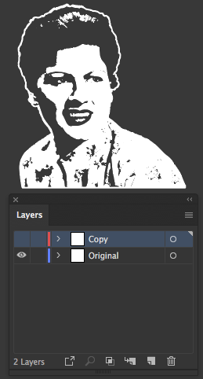
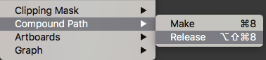

Don't Fall to Pieces
With a little help from Patsy Cline, an explaination of why you can't always just switch ink colors when you're dealing with 1 color art.
Problem
Why can’t I just switch white ink to black ink when there's a face in my art?" If you have 1 color art and it's light ink on something dark, you’ll almost always need to change the background color to something lighter than you intended, or vice versa, leaving you with nothing but heartaches.
Most of the time, if you’re dealing with a logo or something more than 1 color, this is fine. The problems typically start to arise when you do this with something that has a face. Really anything that should be 2 colors and, 1 of those colors is the backgound, might cause some problems if you change the background color.
Take this image of Patsy Cline. With Patsy on the left, we’re printing her lighter than her surroundings, and she looks ok. The white makes up her skin tones, whites of her eyes and the highlights of the image, the darker background makes up the rest of her.
Patsy on the right is the exact same imprint, except now she’s darker than her surroundings, and looks a little… crazy.
Correct
So Wrong
For a better example of this, drag the slider below the image to see what I'm talking about. Patsy stays the same shade of grey, only the background changes color. Right around 50, things start to get a little off.
What's happening is when the shade of the background shifts beyond the shade of the art, it ends up making the image look more like a negative. If you're satisfied knowing the answer, you're done here. If you want to know how to fix it, read on...
Solution
The only real way to resolve this problem is to reverse what prints so the background color(s) show thru where the ink was and prints where it wasn’t. You can usually resolve this by putting an outline around the profile of your art, filling in where the negative space was and deleting the original, flipping the highlights and shadows and correcting the image. Assuming your art is vector based (if you’re screen printing chances are it is anyway), here’s an easy way to get this to work before you go all to pieces.
I'm using illustrator cc so all instructions will be based on that, but I'm guessing other vector programs like CorelDraw have similar tools.
 Starting with this...
Starting with this...
Note - Notice this art has a complete solid line around it. For this to work, your's will need one too. You'll essentially be making a cookie cutter, and it's got to completely enclose what you're "cutting" out.- Select all your art and copy it. ctrl/cmd+c
- Paste in front ctrl/cmd+f and move it to a new layer over the current 1 and hide or lock the layer.
Note - The "in front" is important. It makes sure your art aligns directly overtop of the original, so don't change it's position once you've pasted it. - Select only the art on the original layer, change the fill to any different color and release any compound paths while everything is selected. This can be found under the "Object" tab.
What you're going for is a solid, silhouette of the image, so you may need to get your pen tool and make the shape a solid. - Turn on your hidden layer or unlock it. (again, stressing the importance of the original being in front of the solid shape).
- Select everything in both of these layers.
- In your Pathfinder pallete (if you don't see it, Window>Pathfinder), click "Trim".
 Select all the color you don't want and delete it
Select all the color you don't want and delete it It's probably also a good idea to do a quick cleanup of this while it's selected as well. This can be found under Object>Path>Cleanup. This just runs thru your art and removes any stray points and empty paths that might have shown up after using "Trim".
It's probably also a good idea to do a quick cleanup of this while it's selected as well. This can be found under Object>Path>Cleanup. This just runs thru your art and removes any stray points and empty paths that might have shown up after using "Trim".- Imagine that, you now have the reverse of your art that works on a lighter background!
That's pretty much it. Sometimes you may need to add an outline to seperate your art from the background, but for the most part this is all that's needed to switch colors. This will obviously make it so you'll need 2 images for all backgrounds, but at least you won't be left feeling like you've loved and lost again.